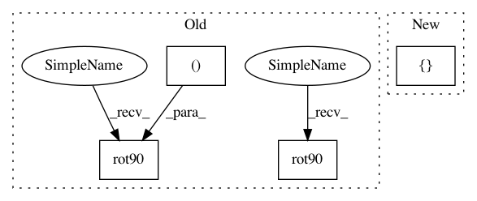

d190e8dc4f51f73e9d6b6e2fdf08f9cbfa352c5b,plot_haxby_searchlight.py,,,#,17
Before Change
s_scores = np.ma.array(searchlight.scores_, mask=np.logical_not(process_mask))
plt.imshow(np.rot90(mean_fmri[..., picked_slice]), interpolation="nearest",
cmap=plt.cm.gray)
plt.imshow(np.rot90(s_scores[..., picked_slice]), interpolation="nearest",
cmap=plt.cm.hot, vmax=1)
plt.axis("off")
plt.title("Searchlight")
////// F_score results
plt.figure(2)
p_ma = np.ma.array(p_unmasked, mask=np.logical_not(process_mask))
plt.imshow(np.rot90(mean_fmri[..., picked_slice]), interpolation="nearest",
cmap=plt.cm.gray)
plt.imshow(np.rot90(p_ma[..., picked_slice]), interpolation="nearest",
cmap=plt.cm.hot)
plt.title("F-scores")
plt.axis("off")
After Change
p_ma = np.ma.array(p_unmasked, mask=np.logical_not(process_mask))
plot_stat_map(nibabel.Nifti1Image(p_ma,
mean_fmri.get_affine()), mean_fmri,
title="F-scores", slicer="z", cut_coords=[-16])
plt.show()
In pattern: SUPERPATTERN
Frequency: 3
Non-data size: 4
Instances
Project Name: nilearn/nilearn
Commit Name: d190e8dc4f51f73e9d6b6e2fdf08f9cbfa352c5b
Time: 2014-06-17
Author: chris.gorgolewski@gmail.com
File Name: plot_haxby_searchlight.py
Class Name:
Method Name:
Project Name: nilearn/nilearn
Commit Name: d190e8dc4f51f73e9d6b6e2fdf08f9cbfa352c5b
Time: 2014-06-17
Author: chris.gorgolewski@gmail.com
File Name: plot_haxby_searchlight.py
Class Name:
Method Name:
Project Name: suragnair/alpha-zero-general
Commit Name: ca1f2c5479000ced7b8f785a27f446be3ed4a46f
Time: 2019-05-27
Author: threedliteguy@users.noreply.github.com
File Name: tafl/TaflGame.py
Class Name: TaflGame
Method Name: getSymmetries
Project Name: nilearn/nilearn
Commit Name: 422881afa09ccd1e5a19ae31a38638e04d6eae7d
Time: 2014-11-24
Author: loic.esteve@ymail.com
File Name: plot_localizer_simple_analysis.py
Class Name:
Method Name: